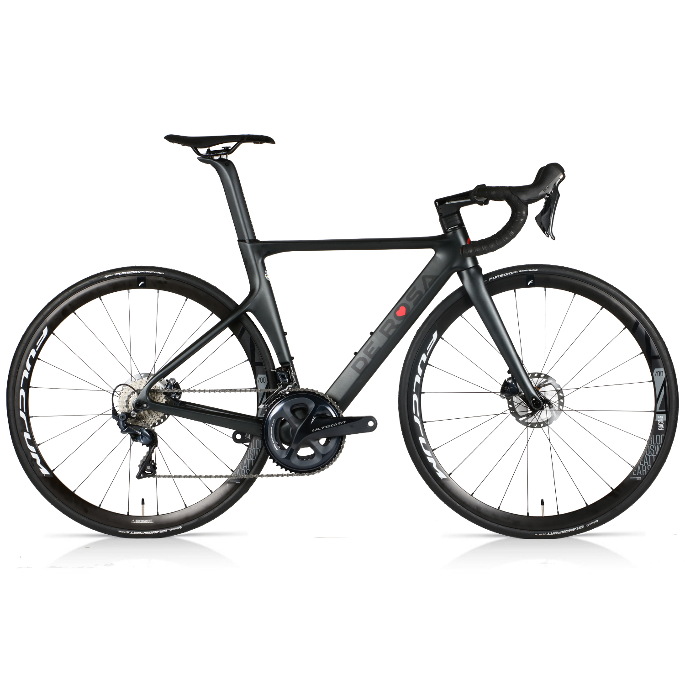

Software Design by Example in Python 27: Conclusion
Consider the bicycle: more specifically, the De Rosa SK Pininfarina. I think it’s beautiful, but I wouldn’t call it art, because being beautiful isn’t its primary purpose. It was created to be useful; the fact that it can also be appreciated aesthetically is an intentional bonus.

Now think about your favorite pieces of software. We routinely critique their interfaces by asking:
-
Does it do what it’s supposed to?
-
Is it pleasurable to use?
What’s missing is the third leg of the industrial design tripod:
- Did its design facilitate its manufacture and maintenance?
At a deeper level, what’s really missing is a shared vocabulary and a suite of canonical examples that would give us a basis for critiquing software in the way that we can a train or a sofa. We use words like “elegant” when referring to Unix’s pipe-and-filter model, but when asked to explain, we run out of meaning long before any reasonably intelligent industrial designer runs out of things to say about the design of a toenail clipper.
In retrospect this is what I have been groping toward for the last twenty-five years. I haven’t succeeded, but I hope this book will help us get a little closer. I hope that some day we’ll be able to talk meaningfully about the beauty of software, because it is beautiful and we deserve to have ways to say that. Until then:
Start where you are.
Use what you have.
Help who you can.

Postscript: It’s been a good run. Since 1991 I have written five technical books, co-written three, and edited or co-edited six, one of them was moderately popular. I’d like to finish one more book before they go out of fashion entirely; if you’d like to help, please get in touch.